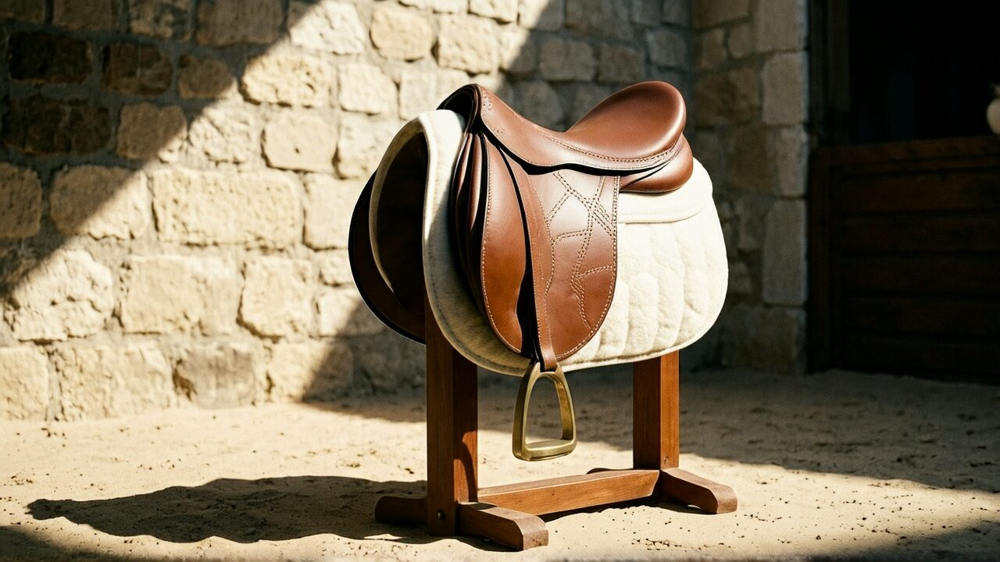
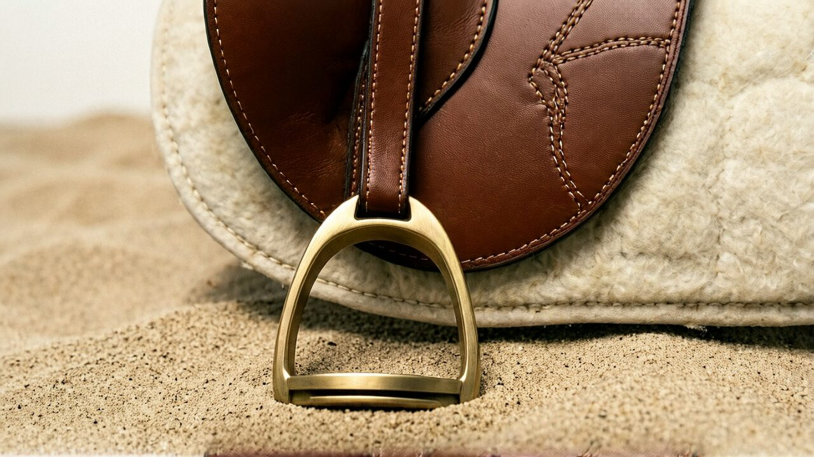
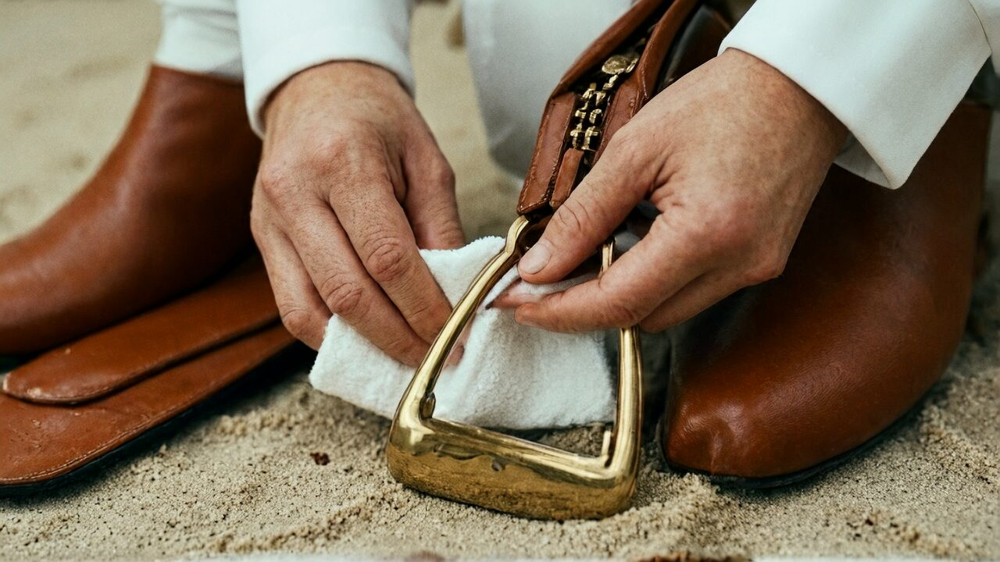
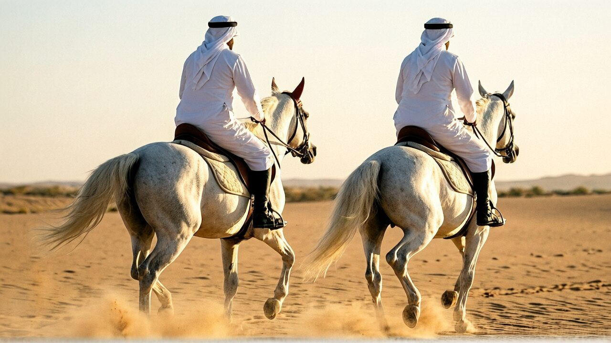
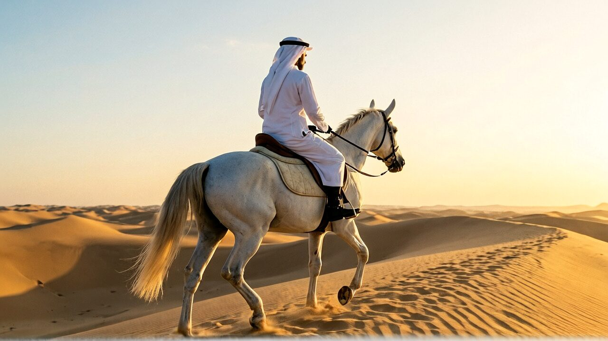
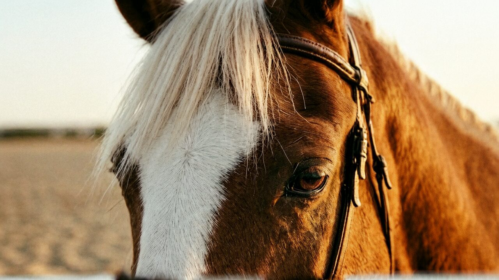
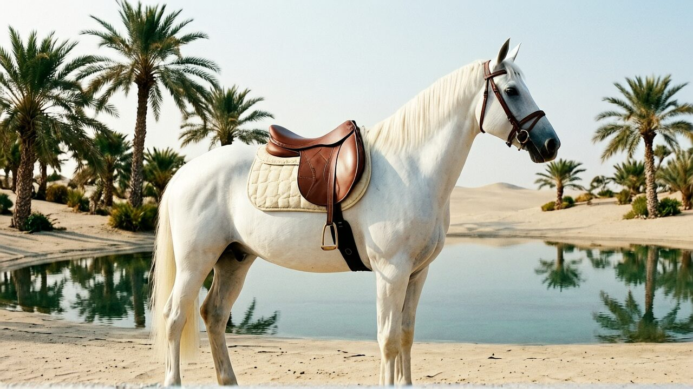
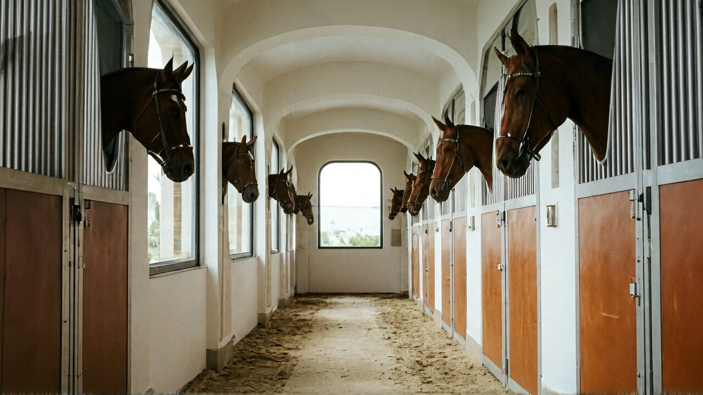
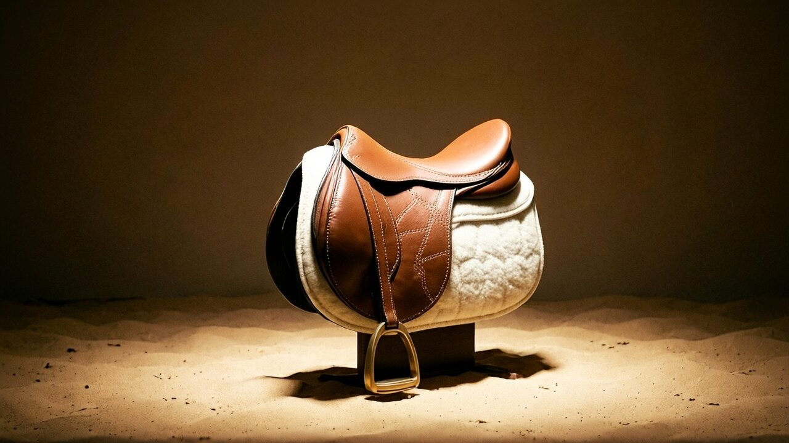

The saddle
Cognac leather. Brass. Patience.
Every KHAYL saddle is cut from a single cognac hide, hand-stitched in a geometric pattern from the desert, and set on a cream wool pad that breathes in the midday heat.
0hours of hand-stitching
0km endurance-ready
0hide per saddle

The craft
Made slowly, so it lasts for generations.


The ride
From the stable to the open dunes.





“A horse is the desert's oldest friend. Its saddle should be worthy of it.”The KHAYL workshop

Private fitting
Fitted to your horse, not to a catalogue.
Our master saddler visits your stable, measures your horse and shapes the tree by hand.